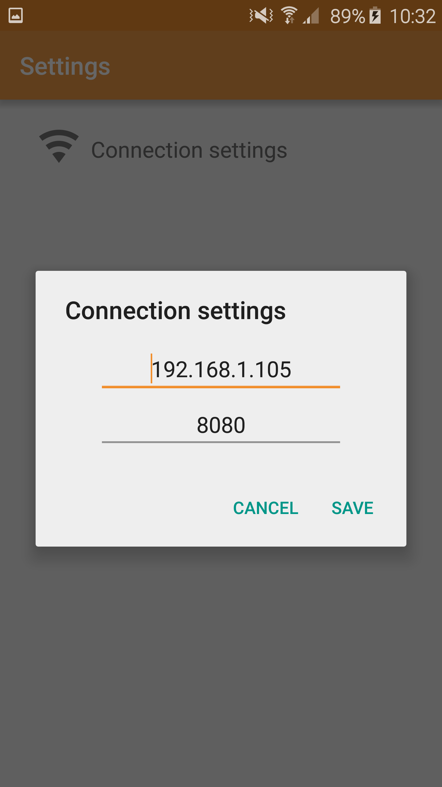
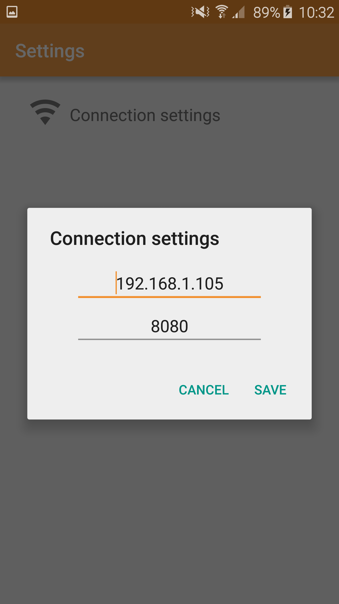
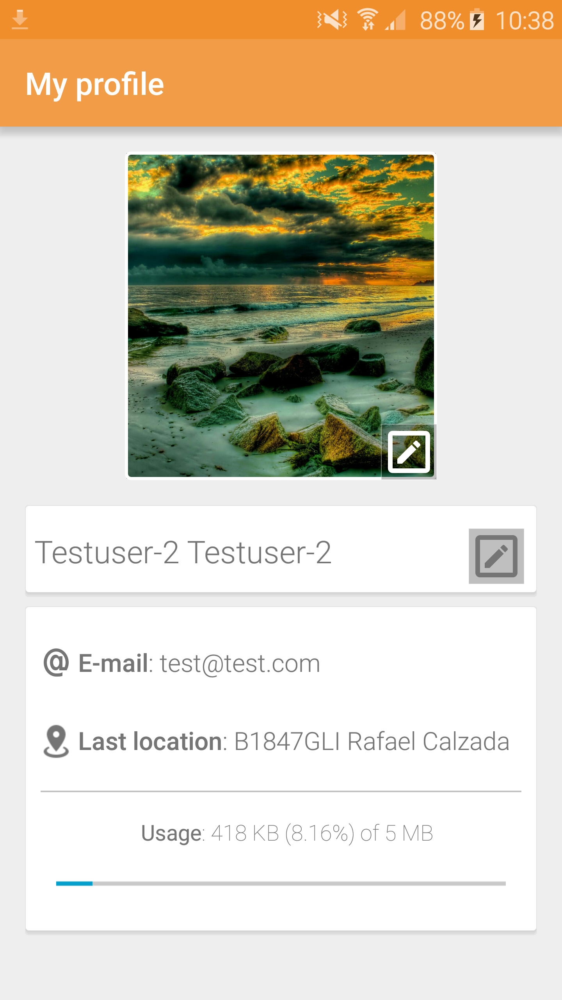
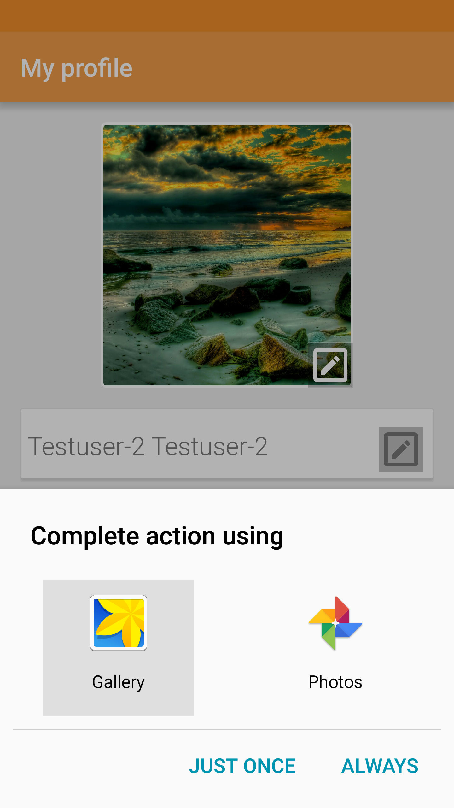
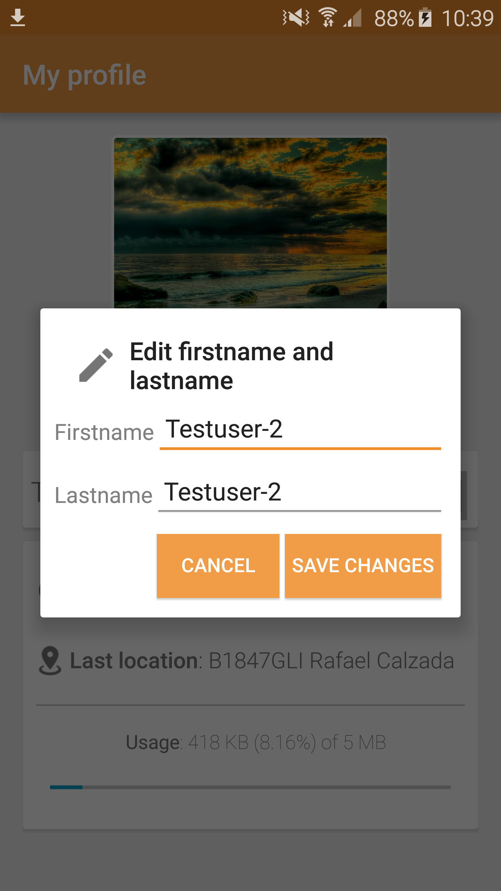
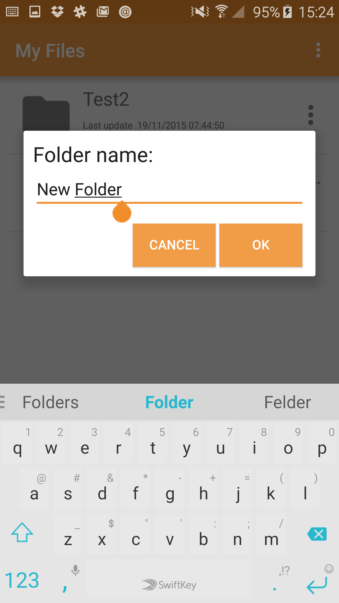
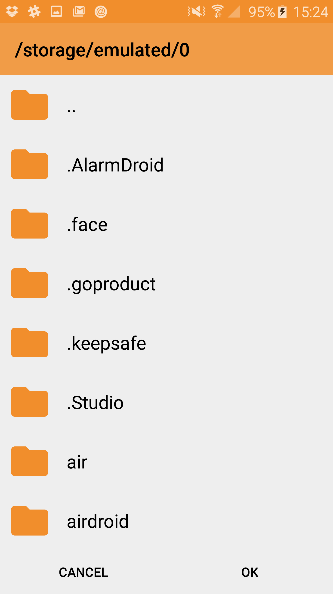
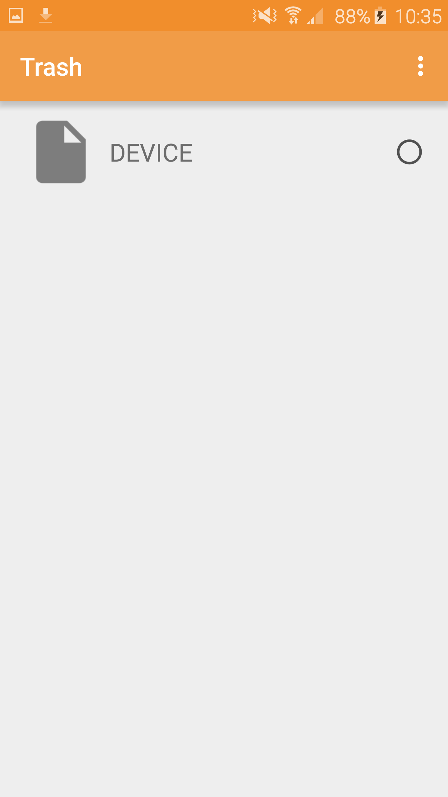
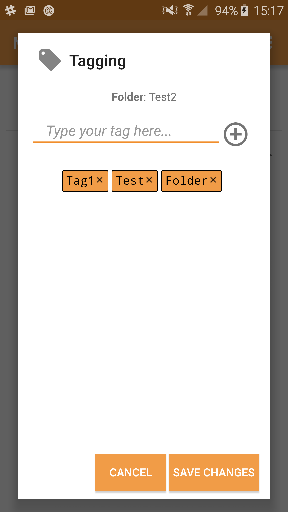
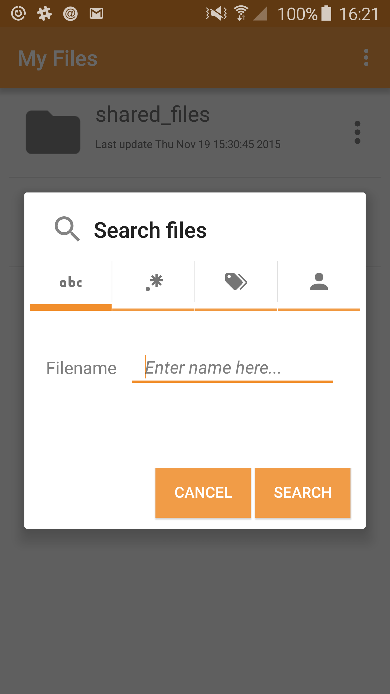

75.52 Taller de Programación II - uDrive (Entrega Final)¶
19/11/2015
Grupo Nro 5
Ayudante asignado: Pablo Rodríguez Manzi
Integrantes:
| Apellido y Nombre | Padrón |
|---|---|
| Cortazzo Romina Pamela | 80915 |
| D’Onofrio Martín | 82106 |
| Liva María Eugenia | 86123 |
| Quiroz Martín | 86012 |
Tag a descargar:
Manual de usuario app uDrive - Android¶
uDrive tiene 100% de compatibilidad con las versiones de Android a partir de 4.4.2 (KitKat). No se garantiza su instalación ni correcto funcionamiento para versiones anteriores.
Instalación¶
Enviar a su dispositivo móvil por el método que desee - conexión USB, Bluetooth, WiFi, Dropbox, etc - el archivo instalador de la aplicación que se encuentra en tp7552/client/uDrive.apk
Una vez localizado en su dispositivo, acceda al mismo mediante un tap y siga las instrucciones en pantalla.
Uso¶
Para utilizar la aplicación debe asegurarse de que el servidor está ejecutándose y la espera de conexiones.
Modificar parámetros de conexión al servidor¶
Al abrir la aplicación por primera vez visualizará la pantalla de “Sign in”, la cual en la esquina superior derecha posee un control de menú contextual (...). Desde allí puede acceder a la opción “Settings” y luego, a “Connection settings”.
En el diálogo que se despliega puede modificar la IP y el puerto del servidor a donde la aplicación se conectará.
 

{kind=link}
Registrar usuario¶
Para utilizar uDrive necesita tener una cuenta de usuario registrada.
Para ello, en la pantalla inicial de “Sign in”, debajo del botón, posee un enlace “Sign up”. Haciéndo tap sobre él será redirigido a un formulario de registración. Complete todos los campos solicitados y presione el botón “Sign up”.

Iniciar / cerrar sesión¶
Iniciar sesión¶
Para iniciar sesión, en la pantalla “Sign in” simplemente ingrese el E-mail y la contraseña con la que ha creado su cuenta de usuario. Presione el botón “Sign in”.
Cerrar sesión¶
Luego de haber iniciado sesión se encontrará en la pantalla principal de la aplicación “My files” donde operará con sus archivos y carpetas. En el extremo superior derecho debe desplegar el menú contextual y dirigirse a la opción “Sign out”.

Información de usuario¶
Perfil¶
Desde el menú contextual de la aplicación debe ingresar a “My Profile”. Allí visualizará su imagen de perfil, el E-mail de su cuenta, la ubicación geográfica desde realizó la última modificación sobre sus archivos o carpetas y el estado de uso de la cuota de almacenamiento otorgada.
{kind=link}
Modificar imagen de perfil¶
Si desea modificar su imagen, haga tap sobre el ícono de lápiz que se encuentra en el ángulo inferior derecho de la imagen. Allí se le dará acceso a la galería de imágenes de su dispositivo donde podrá seleccionar la imagen de su preferencia, que se recomienda - para su mejor visualización - sea de iguales dimensiones en ancho y altura y un tamaño que no supere 1 MB.
{kind=link}
Modificar nombre de usuario¶
Para modificar su nombre y apellido realice tap sobre el ícono de lápiz que se encuentra a la derecha de su nombre. En el diálogo que se despliega modifique el/los campo/s deseados y guarde los cambios.
{kind=link}
Geolocalización¶
Tras realizar la carga de un archivo o creación de una carpeta, la aplicación almacena las coordenadas de su ubicación geográfica, para lo cual deberá tener activado el servicio de GPS de su dispositivo móvil.
Operaciones con archivos¶
Archivos compartidos¶
Todos los archivos que sean compartidos con usted, se almacenarán en su carpeta shared_folder en el directorio raíz de uDrive.
Crear carpetas¶
Desde el menú contextual de la aplicación debe dirigirse a la opción “Add folder” y en el diálogo que se despliega ingresar el nombre que desee para la carpeta. Finalmente realice tap en el botón OK para aceptar.
{kind=link}
Subir archivos¶
Desde el menú contextual de la aplicación debe dirigirse a la opción “Upload file”. Se lanzará un selector de archivos donde podrá navegar la estructura de directorios del filesystem de su dispositivo y elegir el archivo que desee subir.
{kind=link}
Para poder subir el archivo, el tamaño de este no debe superar la cuota de almacenamiento disponible. Si esto ocurriera, la aplicación le mostrará un mensaje de advertencia, impidiéndole la acción.
Descarga de archivos¶
A la derecha de cada item en la lista se encuentra el menú contextual de archivos y carpetas (...). Para realizar la descarga de un archivo debe hacer tap en la opción “Download”. Nuevamente se abrirá un selector de carpetas de su filesystem para que elija el destino de la descarga. Confirme con el botón OK.
Descarga de versiones anteriores¶
Si el archivo cuenta con más de una versión en el servidor, en el menú contextual de archivo se dará la opción de descargar una versión determinada. Realice tap en “Previous versions” y seleccione la versión deseada. Finalmente confirme con el botón “Download”.
Descarga de carpetas¶
De forma análoga a la descarga de archivos, diríjase al menú contextual de la carpeta y seleccione “Download”. Elija el directorio de su filesystem que será el destino de la descarga y confirme con OK. La carpeta será descargada con todo su contenido en el formato comprimido ZIP.
Compartir archivos¶
Desde el menú contextual del archivo seleccione “Share”. A continuación haga tap en el botón “Add collaborator” y escriba en el campo “Search” la dirección de E-mail del usuario con el que desea compartir el archivo. Realice tap sobre el resultado que busca y a continuación marque el círculo de verificación para confirmar el usuario. Para terminar, realice tap sobre la tilde ubicada en el extremo superior derecho.
Descompartir archivos¶
Para poder ejecutar esta acción usted debe ser el propietario del archivo. No podrá descompartir archivos a los que tiene acceso pero no le pertenecen.
Sitúese sobre el menú contextual del archivo compartido y seleccione la opción “Unshare”. A continuación seleccione los usuarios a quienes desea descompartirle el archivo. Confirme con un tap sobre la tilde que se encuentra en el extremo superior derecho.
Enviar archivo a la papelera¶
Para poder ejecutar esta acción usted debe ser el propietario del archivo. No podrá eliminar archivos a los que tiene acceso pero no le pertenecen.
Sitúese sobre el menú contextual del archivo compartido y seleccione la opción “Delete”. Se le solicitará una confirmación. Al confirmar con OK, el archivo será enviado a la papelera.
{kind=link}
Papelera¶
Para acceder a la papelera, diríjase al menú contextual de la aplicación y seleccione “Trash”.
Eliminar permanentemente archivos¶
Todos los archivos temporalmente eliminados se visualizarán aquí con un círculo a la derecha. Tilde - haciendo tap en cada círculo - todos aquellos que desearía eliminar definitivamente. Luego, desde el menú contextual de la papelera (extremo superior derecho) realice un tap en “Delete selected”. Tras solicitud de confirmación, realice tap en OK y eliminará de forma permanente los archivos de la aplicación.
Vaciar papelera¶
Desde el menú contextual de la papelera selecione “Empty trash” y eliminará de forma permanente todos los archivos que se encontraran allí.

Recuperar archivos¶
Puede recuperar archivos individualmente, seleccionándolos con un tap en cada círculo, y eligiendo la opción “Restore selected” desde el menú contextual de la papelera.
También puede restaurarlos todos a la vez - sin tener que marcar los círculos - haciendo tap en la opción “Restore all”.
Operaciones con metadatos de archivos y carpetas¶
Ver información¶
Desde el menú contextual del archivo o carpeta diríjase a la opción “Information”.
Editar nombre de archivo¶
En la pantalla “Information” podrá editar el nombre del archivo o carpeta haciendo tap en el ícono de lápiz que se encuentra a la derecha del nombre. En el diálogo que se despliega realice las modificaciones deseadas y confirme con el botón “Save changes”.
Etiquetar¶
Puede asociar diversas etiquetas a cada archivo o carpeta. Para ello, desde el menú contextual del archivo o carpeta, seleccione la opción “Tag”. En el diálogo que se despliega podrá observar las etiquetas previamente asociadas y podrá ingresar nuevas. En el campo de texto escriba el nombre de la etiqueta que desea crear y asociar y realice un tap en el ícono (+).
Para eliminar etiquetas, basta con realizar un tap sobre la etiqueta asociada que desea eliminar y guarde los cambios con el botón “Save changes”.
{kind=link}
Búsqueda de archivo¶
Para la búsqueda de archivos diríjase a la opción “Search files” dentro del menú contextual de la aplicación. Allí se abrirá un diálogo presentándole cuatro modalidades de búsqueda.
{kind=link}
Por nombre¶
Para buscar todos los archivos que contengan determinada cadena en su nombre, realice un tap en el primer tab del diálogo (con el ícono ‘abc’), escriba la cadena deseada y confirme con el botón “Search”. Obtendrá una lista con los archivos que cumplen el criterio de búsqueda o bien una lista vacía con la leyenda “No results found”.
Por extensión¶
Para buscar todos los archivos que contengan determinada extensión, realice un tap en el segundo tab del diálogo (con el ícono ‘.*’), escriba la extensión deseada y confirme con el botón “Search”. Obtendrá una lista con los archivos que cumplen el criterio de búsqueda o bien una lista vacía con la leyenda “No results found”.
Por etiqueta¶
Para buscar todos los archivos que contengan determinada etiqueta, realice un tap en el tercer tab del diálogo (con el ícono de etiqueta). Visualizará una lista desplegable conteniendo todas las etiquetas de todos los archivos propios y compartidos con el usuario. Seleccione la etiqueta deseada y confirme con el botón “Search”. Obtendrá una lista con los archivos que cumplen el criterio de búsqueda o bien una lista vacía con la leyenda “No results found”.
Por propietario¶
Para buscar, dentro de los archivos compartidos, aquellos que pertenecen a determinado propietario, realice un tap en el cuarto y último tab del diálogo (con el ícono de usuario). Visualizará una lista desplegable conteniendo a todos los propietarios. Seleccione la etiqueta deseada y confirme con el botón “Search”. Obtendrá una lista con los archivos que cumplen el criterio de búsqueda o bien una lista vacía con la leyenda “No results found”.